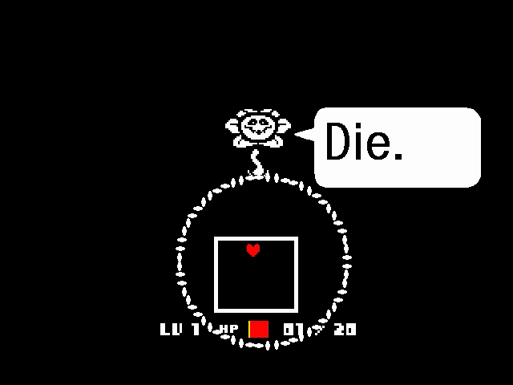
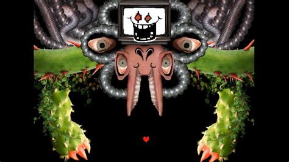

undertale.exe
Undertale
Using Motifs to Unify a Story
Content Warning: Slightly disturbing images
When the classic indie RPG Undertale was released by developer Toby Fox to extreme success, many fans were very quick to point out the connected nature of the songs. His usage of musical motifs, or small phrases in songs that repeat throughout the various tracks in the game, allow players to associate different songs with different characters and ideas. One of the most notable examples of this happening is also the most complicated. In the beginning of the game, the first character the player, a human child who has fallen into an underground cave full of monsters, encounters is a talking flower, creatively named Flowey. Flowey serves as a very brief tutorial for the game before betraying the player by asking them to perform an action which reduces the player’s health down to 1, and then attempting to finish them off. The music which plays in the background of this exchange is very bare, but serves both to lull players into a sense of false security with its cheerful melody and introduce a recurring motif which appears whenever Flowey does.


Early measures in the song.

Later at the end of the game’s neutral route, after the showdown between the player and the route’s final boss, Flowey reappears, revealing that while the player and the boss were fighting, he had stolen six human souls, objects of extreme power in the game, and then proceeds to fight the player as the true final boss of the route. While his appearance is significantly different, and the musical style of the boss theme is as well, the same motif we see in the beginning of the game reappears to connect the character’s appearance.
Early measures in the song.
At the end of the game’s significantly longer Pacifist route, it is revealed that Flowey is actually a soulless remnant of a different character who died in the past. When the player goes to face off against Flowey, instead of facing him alone, they are aided by every other character in the game, who they befriended along the way. Flowey promptly absorbs their souls as well, regaining his old form and fighting the player in the final battle of the route. As this is a new character, a new motif is introduced, but the original Flowey motif remains as well.
Early measures in the song.
This bossfight contains multiple tracks, all of which contain this new motif to help them to blend more seamlessly. While they do exist separately, the player is not aware of this, and hears it as one continuous song.
Early measures in the song.
The duality of this character is a key theme within the entire game, and as such, the bossfight theme is inside the very first track the player hears, played during the opening cutscene. While the player may not realize this the first few times, Undertale is a game that needs to be played multiple times to truly reach completion, and it becomes noticeable eventually.
Early measures in the song.
While it may not be nearly as in depth as this case, most of the major characters in Undertale have their own motifs, which appear in their dialogue tracks, their fight themes, and in various other tracks throughout the game. The connectedness of the music makes listening to Undertale’s music a very eye-opening experience as a whole.
Undertale ©2013 Toby Fox